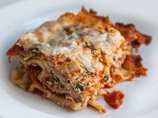

Lasagna

Description
This recipe comes from John Chandler, who
shared his lasagna with the world more than
two decades ago. Since then, it has become
one of the most beloved and widely-cooked
lasagna recipes online, earning millions of
views each year and a loyal following of home
cooks. John’s creation continues to bring
families together around the dinner table,
and we’re honored to share it here as part
of his lasting legacy.
Ingredients
- Meat - sweet italian sausage and lean ground beef
- Onion and garlic - one onion and two cloves of garlic
- Tomato Products - one can of crushed tomatoes, two cans of tomato sauce, and two cans of tomato paste
- Sugar - two tablespoons of white sugar
- Spices and seasonings - fresh parsley, dried basil leaves, salt, Italian seasoning, fennel seeds, and black pepper
- Lasagna noodles
- Cheeses - parmesan, mozzarella, and ricotta cheese
- Egg
Steps
- Make the meat sauce
- Cook the noodles
- Make the ricotta mixture
- Layer the lasagna according to the recipe instructions
- Cover with foil and bake
- Let the lasagna rest before serving
Home